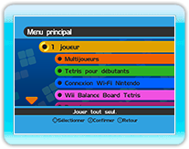

Voici les modes disponibles dans Tetris Party.
● 1 joueur
Tetris pour 1 joueur avec 5 types de règles.
● Multijoueurs
Tetris pour 2 à 4 joueurs (ordinateur inclus) avec 7 types de règles.
● Tetris pour débutants
Tetris pour 1 joueur avec des tétrominos simples. 1 seul type de règles.
● Connexion Wi-Fi Nintendo
Affrontez des amis ou des joueurs du monde entier via la connexion Wi-Fi Nintendo.
Vous pouvez aussi participer à des tournois et vérifier les informations des tournois.
● Wii Balance Board Tetris
Tetris pour 1 joueur en utilisant le Wii Balance Board avec 3 types de règles.
● Données
Effacez ou créez des données.
● Tutorial
Le mode tutorial vous permet de voir les règles de base et comment jouer à Tetris.
● Records
Affiche vos résultats et records personnels. Vous pouvez également voir le classement mondial en vous connectant à la connexion Wi-Fi Nintendo.
● Options
Ajustez les différents réglages du jeu.